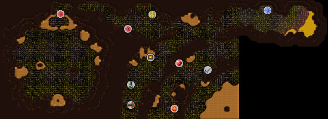
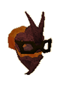
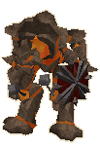

")
TzHaar (Members)
Warning | Introduction | Location | Points of Interest | Personalities
Quests | The Men of Stone | Miscellaneous
Quests | The Men of Stone | Miscellaneous
Warning
The TzHaar city is a multicombat area and though you may think that some of its citizens make easy pickings, the larger ones will often come to their aid. For this reason, it's a good idea to either avoid attacking anyone or to come down with friends (or you can just be supremely confident in your skills).
Introduction

Even the currency in the city beneath the volcano is different. The stone men seems to place little value on gold, and instead favour obsidian, a black volcanic glass.
Location

Once you enter the dungeon you will need to find the cave entrance nearby, this is the entry point to the TzHaar city.
East, across the seas to Asgarnia, is Falador.
Points of Interest

The features of the TzHaar city that draw the most visitors to the city must be the Fight Pits and the Fight Cave. In the Pits, JalYt (non-TzHaar) combatants fight to be the last one standing, while in the Fight Cave adventurers attempt to survive dozens of waves of bizarre creatures for the merest chance to fight the legendary TzTok-Jad.
In TzHaar-Hur-Lek's ore and gem store, those who have earned a particularly large amount of TokKul can purchase an uncut onyx, a highly sought-after stone.
TzHaar weaponry is also excellently crafted, and can be purchased from TzHaar-Hur-Tel.
Personalities

TzHaar-Mej-Kah is the guardian of the entrance to the Fight Pits, and it is he that hands out the rewards for the victor. He is responsible for the day-to-day running and maintenance of the Fight Pits, as well as making sure the viewing orbs are working properly. He is, like all TzHaar-Mej, a powerful mage and wise leader of the TzHaar. |

TzHaar-Mej-Jal may well be the most frequently visited TzHaar in the city. He watches over the Fight Cave and ensures that the beasts are fed, watered and enraged. If anyone could be called TzTok-Jad's master, then it is TzHaar-Mej-Jal.
|
|
| TzHaar-Mej-Kah can be found at the entrance to the TzHaar Fight Pits, in the west of the TzHaar city. | TzHaar-Mej-Jal can be found inviting wandering adventurers to test themselves against the TzHaar Fight Cave west of the main city. |
|

TzHaar-Mej-Lor is one of the wisest of all TzHaar, and also one of the most interested in the ways and affairs of humans. As such, he has been charged with creating a library of human books, with the aim of providing useful texts in a simpler language than that which the TzHaar use.
|

The TzHaar are not widely known for their artworks (unless you consider their exceptional weapons to be works of art), but some TzHaar take great interest in more leisurely, intellectual pursuits. TzHaar-Hur-Brekt is fascinated by theatre, and could become famed across RuneScape - if he can ever get a play off the ground, that is.
|
|
| TzHaar-Mej-Lor can be found in the TzHaar Library, just south of the furnace. | TzHaar-Hur-Brekt ponders the finer details of literary art in the TzHaar mines. |

TzTok-Jad is without a doubt one of the most dangerous beasts on RuneScape. Thousands of over-confident adventurers have fought their way through hundreds of terrifying beasts only to meet their end under a barrage of TzTok-Jad's attacks. He is surely the greatest tourist attraction in the TzHaar city.
|
| TzTok-Jad can only be found by the mightiest warriors, rangers and mages, and only in the TzHaar Fight Cave. |
Quests
The following quest can be started in the TzHaar city:
- TokTz-Ket-Dill (Members)
The Men of Stone

To say that the TzHaar-Hur are the weakest opponents in the TzHaar city says much of the TzHaar's strength. They are powerful fighters, but are also the craftsmen in the city. They fashion weapons, armour and ornaments, as well as mining the onyx that the TzHaar value so highly.
|

The TzHaar-Mej are both the leaders of the TzHaar people and powerful mages. They use the power of the rocks and the volcano to defeat their foes, but as the TzHaar are generally peaceful they do not often have to do so.
|
|
| TzHaar-Hur can be found throughout the city. | TzHaar-Mej can be found throughout the city. |

Even men of stone must eat, and the job of hunting their food falls to the TzHaar-Xil. They are excellent fighters, and beyond the talents of most adventurers. They are the darkest in colouring, which no doubt aids them in hunting their prey. The TzHaar enjoy preying on large mammals and rodents that, like the TzHaar, are strong enough to burrow through the hard volcanic rock.
|

The TzHaar-Ket are the warriors of the TzHaar, and their massive frame shows this off admirably. They wield massive TokTz-Ket-Om and TokTz-Ket-Xil, or any of the TzHaar weapons they so choose. They are strong enough to even wield with one hand (or their four) those weapons that normal men must carry with two.
|
|
| TzHaar-Xil can be found throughout the city. | TzHaar-Ket can be found throughout the TzHaar city. |
Miscellaneous
- The only currency that the TzHaar accept is TokKul, which is not tradeable and can only be gathered in the TzHaar city.
- TzTok-Jad is one of the toughest beasts in RuneScape, and you'll only find him in the TzHaar city. If you're looking for a challenge, you'd best head under the volcano.
- The Fire Cape, the only animated cape in the game and certainly the best, can only be won by defeating TzTok-Jad. If you defeat TzTok-Jad twice or more (well done!) you will receive another Fire Cape and a large quantity of TokKul.

More articles in
Cities and Towns
|
|